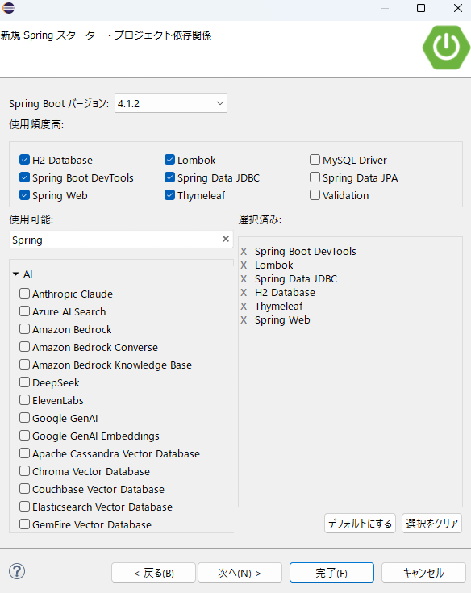
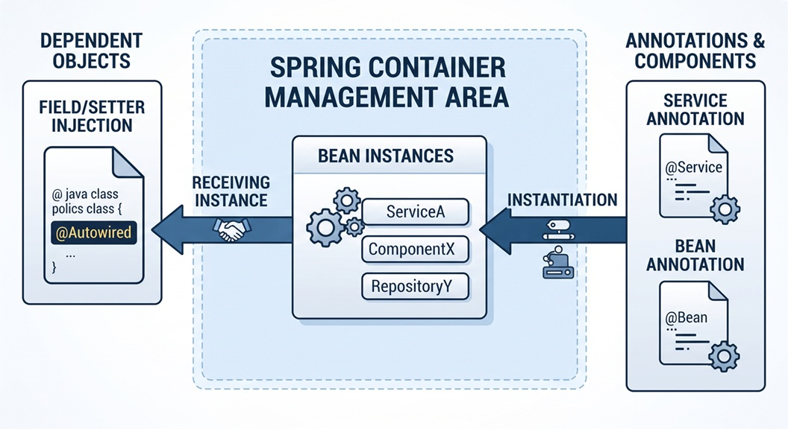

Spring JDBC
1. Spring JDBC とは？
Spring JDBCとは、Javaの「Spring Framework」が提供してくれる、データベース操作を楽にするための便利な仕組み（ライブラリ）です。
Spring JDBCを使うと、面倒な手順を自動化してくれて、より少ないコードで安全にデータベースを操作できるようになります。
2.「普通のJDBC」とは何なのか？
「普通のJDBC（Java Database Connectivity）」は、Javaからデータベースに接続するための一番もととなる標準的な仕組みです。
いわば「すべての基本」です。
ただし、普通のJDBCは「できることの基本」がすべて揃っている反面、実際にコードを書くとなると以下のような面倒で繰り返し同じになる作業（ボイラープレートコード）がたくさん必要になります。
Spring JDBCは、「キーを回せばすぐに快適に走り出せる、便利な機能がついたオートマ車」と言えます。
２，Eclipse (Spring Initializr)の設定
| 項番 | 設定 | 解説 |
|---|---|---|
| １ |

|
プロジェクト名：Sample04 青枠は、確認してください。 特に、タイプ： |
| ２ |
 |
依存関係（Dependencies）を追加します。
１，Spring Boot DevTools：開発を効率的に進めるための便利な機能を集めた開発者向けツール（モジュール） |
| ３ |

|
最初のパッケージ構成です。開発上、いくつかパッケージを作成して頂きます。 |
３，H2データベース設定
H2データベースの設定例です。上記のファイルにデータベースの設定を書き込んでください。
他のDB（以降、データベースをDBと表記します）も同様の設定をしますが、設定がわからない場合は優秀なAIさんに聞いて見てください。
# データソース設定（インメモリデータベース）
spring.datasource.url=jdbc:h2:mem:testdb;DB_CLOSE_DELAY=-1
spring.datasource.driver-class-name=org.h2.Driver
spring.datasource.username=sa
spring.datasource.password=
# 起動時にテーブルスキーマを自動実行（schema.sql）
spring.sql.init.mode=always
４，データベース初期化スクリプト：src/main/resources/schema.sql
アプリケーション起動時に自動でH2データベースへテーブルを作成するSQLファイルです。
src/main/resources/フォルダの中にschema.sqlファイルを作ってその中に書き込んでください。
CREATE TABLE IF NOT EXISTS members (
id INT AUTO_INCREMENT PRIMARY KEY,
kanji_sei VARCHAR(50),
kanji_mei VARCHAR(50),
kana_sei VARCHAR(50),
kana_mei VARCHAR(50),
birth_date VARCHAR(20),
age VARCHAR(10),
postal_code VARCHAR(20),
address VARCHAR(255)
);
| 項番 | SQL | 解説 |
|---|---|---|
| １ | CREATE TABLE | 「データベースに新しいテーブルを作成する」と言う意味です。 多くのDBは新しくテーブルを作るときはこの「CREATE TABLE」を使用します。 |
| ２ | IF NOT EXISTS | 「テーブルが存在しない場合にのみ作成します。」と言う意味です。 従って、 「CREATE TABLE IF NOT EXISTS」は、テーブルが存在しない場合にのみ新しいテーブルを作成するSQL文です。 |
| ３ | AUTO_INCREMENT |
昔のDBでは、テーブルの主キー（IDなど）を自動で増加させるために「AUTO_INCREMENT」を使用していました。 最近のDBでは、主キーを自動で増加させるために「IDENTITY」や「SERIAL」などのキーワードが使われることもあります。 H2データベースでは、AUTO_INCREMENTを使用しても問題ありません。 もっと古い奴だとこの自動加算機能がない奴もありましてね、アプリ側で計算してIDをセットしてやらないといけなかったのです。 |
| ４ | PRIMARY KEY |
PRIMARY KEY（主キー）は、一言で言うと「テーブルの中の各行（データ）を完全に一意に区別し、特定するための『目印（識別子）』」です。
【目的】
1. データの一意性を保証する 2. データの整合性を保つ 3. データの検索や参照を効率化する 4.テーブル同士の結びつき（リレーション） |
５，フォームクラス：com.example.demo.form.MemberForm.java
メンバー情報入力用のフォームクラスです。
フォームクラスは、ユーザーが入力したデータを一時的に保持するための「データの入れ物」です。
フォームクラスを使うことで、ユーザーが入力したデータを簡単に扱うことができ、データの受け渡しやバリデーション（入力チェック）を効率的に行うことができます。
package com.example.demo.form;
import lombok.Data;
@Data
public class MemberForm {
private String kanjiSei; // 漢字姓
private String kanjiMei; // 漢字名
private String kanaSei; // カナ姓
private String kanaMei; // カナ名
private String birthDate; // 生年月日(yyyy-mm-dd 形式)
private String age; // 年齢
private String postalCode; // 郵便番号
private String address; // 住所
}
このアノテーションをクラスに付けると、
1. フィールドのGetter/Setterメソッド
2. toString()メソッド
3. equals()メソッド
4. hashCode()メソッド
5. コンストラクタ（引数なし）
が自動的に生成されます。
これにより、コードの冗長性が減り、可読性が向上します。
６，リポジトリクラス (com.example.demo.repository.Sample04Repository)
メンバー情報のデータアクセスを行うリポジトリクラスです。
このクラスを通じて、データベースとのやりとりを行います。
package com.example.demo.repository;
import org.springframework.beans.factory.annotation.Autowired;
import org.springframework.jdbc.core.JdbcTemplate;
import org.springframework.stereotype.Repository;
import com.example.demo.form.MemberForm;
@Repository
public class Sample04Repository {
@Autowired
private JdbcTemplate jdbcTemplate;
public int insertMember(MemberForm form) {
String sql = "INSERT INTO members (kanji_sei, kanji_mei, kana_sei, kana_mei, birth_date, age, postal_code, address) VALUES (?, ?, ?, ?, ?, ?, ?, ?)";
try {
int rows = jdbcTemplate.update(sql,
form.getKanjiSei(),
form.getKanjiMei(),
form.getKanaSei(),
form.getKanaMei(),
form.getBirthDate(),
form.getAge(),
form.getPostalCode(),
form.getAddress());
// 1件以上登録できたら成功(0)、それ以外は失敗(-1)
return (rows > 0) ? 0 : -1;
} catch (Exception e) {
e.printStackTrace();
return -1;
}
}
}

Spring Bootでは、プログラム全体で使うオブジェクト（Bean）をSpringコンテナという場所で一元管理します。
@Repository をクラスにつけておくと、Spring起動時に自動的にそのクラスのインスタンスを生成し、管理対象にしてくれます。
これにより、他のクラス（サービスクラスなど）で new キーワードを使わずに、DI（依存性の注入）を使って簡単にそのリポジトリ機能を利用できるようになります。
これが @Repository の最も高度で重要な機能です。
データベース操作を行っていると、使っているデータベース（MySQL、PostgreSQL、Oracleなど）やライブラリによって異なるエラー（例外）が発生します。
@Repository をつけておくと、Springがそれぞれのデータベース固有のエラーを検出し、Spring共通のエラー（DataAccessException）に自動で変換（翻訳）してくれます。
これにより、サービス層などの上流のコードが「どのデータベースを使っているか」に依存しにくくなり、エラーハンドリングがシンプルになります。
JdbcTemplate: Spring Frameworkが提供するクラスの名前です。
データベース操作の面倒な定型処理（接続の確立、例外処理、後片付けなど）をすべて隠蔽してくれます。
VALUES (?, ?, ?, ?, ?, ?, ?, ?)";
VALUES (?, ?, ?, ?, ?, ?, ?, ?)"は「何のこっちゃ？」と思われるかもしれませんが、これは「プレースホルダー」と呼ばれるもので、実際の値は後で安全に埋め込まれる仕組みです。
これにより、SQLインジェクション攻撃などのセキュリティリスクを防ぐことができます。
つまり、ユーザーが入力したデータを直接SQL文に埋め込むのではなく、プレースホルダーを使って安全に値を渡すことで、データベース操作の安全性を高めることができます。
- メソッドの戻り値として、そのSQLの実行によって影響を受けた行数（int型）が返されます。
- 例：1件更新されれば 1、対象がなく更新されなければ 0 が返るため、「正しく処理が行われたか」の確認に利用できます。
これは三項演算子（条件演算子）と呼ばれるものです。
もし rows（行数など）が0より大きければ 0 を返し、そうでなければ（0以下なら） -1 を返す」という処理を行っています。
これは例外処理のためのメソッドで、例外が発生した際にその詳細情報をコンソールに出力します。
これにより、デバッグや問題の特定が容易になります。
７，サービスクラス (com.example.demo.service.Sample04Service)
メンバー情報のビジネスロジックを処理するサービスクラスです。
このクラスを通じて、アプリケーションのロジックが実装されます。
生年月日 (yyyy-MM-dd) から現在の年齢を計算し、MemberForm の age にセットした上でリポジトリを呼び出します。
package com.example.demo.service;
import java.time.LocalDate;
import java.time.Period;
import java.time.format.DateTimeFormatter;
import org.springframework.beans.factory.annotation.Autowired;
import org.springframework.stereotype.Service;
import com.example.demo.form.MemberForm;
import com.example.demo.repository.Sample04Repository;
@Service
public class Sample04Service {
@Autowired
private Sample04Repository sample04Repository;
public Object sample0401Service(MemberForm form) {
// 7. 生年月日から年齢を計算する
try {
//文字列を日付オブジェクトに読み込んだりするための「フォーマッタ（規則の定義）」を作成しているコード
DateTimeFormatter formatter = DateTimeFormatter.ofPattern("yyyy-MM-dd");
//フォームから送られてきた日付の文字列を、Javaで日付として扱える LocalDate オブジェクトに変換（パース）しているコード
LocalDate birthDate = LocalDate.parse(form.getBirthDate(), formatter);
//現在の年月日（今日の日付）を取得し、LocalDate オブジェクトとして変数に保存しているコード
LocalDate currentDate = LocalDate.now();
//生年月日（birthDate）と今日の日付（currentDate）の差を計算し、現在の「年齢（満年齢）」を算出しているコード
int calculatedAge = Period.between(birthDate, currentDate).getYears();
// 年齢をセット
//先ほど計算した年齢（数値）を文字列に変換し、画面やデータを管理するフォームオブジェクトにセット（格納）しているコード
form.setAge(String.valueOf(calculatedAge));
} catch (Exception e) {
// 日付パースエラー等の場合
return -1;
}
// リポジトリにフォームデータを渡し、書き込み結果を受け取る (8)
int result = sample04Repository.insertMember(form);
// 9. 戻り値が 0 ならフォームデータを、-1 なら -1 を返す
if (result == 0) {
return form;
} else {
return -1;
}
}
}
８，コントローラークラス (com.example.demo.controller.Sample04Controller)
package com.example.demo.controller;
import org.springframework.beans.factory.annotation.Autowired;
import org.springframework.stereotype.Controller;
import org.springframework.ui.Model;
import org.springframework.web.bind.annotation.GetMapping;
import org.springframework.web.bind.annotation.ModelAttribute;
import org.springframework.web.bind.annotation.PostMapping;
import com.example.demo.form.MemberForm;
import com.example.demo.service.Sample04Service;
@Controller
public class Sample04Controller {
@Autowired
private Sample04Service sample04Service;
// 2. GETリクエスト /newmember
@GetMapping("/newmember")
public String sample0401(Model model) {
// 3. 空の MemberForm インスタンスを Model に追加し、newmember.html に遷移
model.addAttribute("memberForm", new MemberForm());
return "newmember";
}
// 6. POSTリクエスト /newmemberResult
@PostMapping("/newmemberResult")
public String sample0401Result(@ModelAttribute MemberForm memberForm, Model model) {
// Serviceの呼び出し
Object result = sample04Service.sample0401Service(memberForm);
// 10. 判定分岐
if (result instanceof Integer && (Integer) result == -1) {
// エラー画面へ遷移 (12)
return "error01";
} else {
// 成功時はフォームデータをModelにセットし、結果画面へ遷移
//「コントローラー（サーバー）側で処理したデータ（オブジェクト）を、画面（HTML/Thymeleaf）へ渡すための設定」を行っている
model.addAttribute("memberForm", result);
return "newMemberResult";
}
}
}
Object result = sample04Service.sample0401Service(memberForm);
なぜ、Objectでなければならないのか？
このメソッドは、成功時には MemberForm オブジェクトを返し、失敗時には -1 を返すように設計されています。
そのため、戻り値の型を Object にすることで、異なる型（MemberForm と Integer）を同じ変数 result に格納できるようにしています。
これにより、サービスクラスのメソッドが返す結果に応じて適切な処理を行うことができます。
具体的にどのようなチェックをしているのか、2つの条件に分けて説明します。
意味: 変数 result の中身が、数値（整数）を表す Integer 型であるかどうかを調べています。
理由: Serviceクラスの戻り値の型が Object（どんな型でも入る箱のような型）になっているためです。成功したときはフォームデータ（オブジェクト型）、失敗したときは -1（整数型）が返ってくる設計になっているため、まずは「今入っているのは数値データかな？」と確認しています。
意味: 変数 result に格納された整数値が -1 と等しいかどうかを調べています。
理由: シナリオの仕様で、データベースの書き込みに失敗した場合は -1 を返す決まりになっています。そのため、値が -1 であれば「書き込み失敗」とみなします。
９，HTMLテンプレート (src/main/resources/templates/)
<!DOCTYPE html>
<html xmlns:th="http://www.thymeleaf.org">
<head>
<meta charset="UTF-8">
<title>新規会員登録</title>
</head>
<body>
<h2>新規会員情報入力</h2>
<form th:action="@{/newmemberResult}" th:object="${memberForm}" method="post">
<label>漢字姓: <input type="text" th:field="*{kanjiSei}" /></label><br>
<label>漢字名: <input type="text" th:field="*{kanjiMei}" /></label><br>
<label>カナ姓: <input type="text" th:field="*{kanaSei}" /></label><br>
<label>カナ名: <input type="text" th:field="*{kanaMei}" /></label><br>
<!-- 年齢は後で計算するので表示しない -->
<label>生年月日 (yyyy-mm-dd): <input type="text" th:field="*{birthDate}" placeholder="2000-01-01" /></label><br>
<label>郵便番号: <input type="text" th:field="*{postalCode}" /></label><br>
<label>住所: <input type="text" th:field="*{address}" /></label><br>
<button type="submit">登録する</button>
</form>
</body>
</html>
<!DOCTYPE html>
<html xmlns:th="http://www.thymeleaf.org">
<head>
<meta charset="UTF-8">
<title>登録完了</title>
</head>
<body>
<h2>登録完了画面</h2>
<p>以下の内容で登録しました。</p>
<ul>
<li>氏名: <span th:text="${memberForm.kanjiSei}"></span> <span th:text="${memberForm.kanjiMei}"></span></li>
<li>フリガナ: <span th:text="${memberForm.kanaSei}"></span> <span th:text="${memberForm.kanaMei}"></span></li>
<li>生年月日: <span th:text="${memberForm.birthDate}"></span></li>
<li>年齢: <span th:text="${memberForm.age}"></span>歳</li>
<li>郵便番号: <span th:text="${memberForm.postalCode}"></span></li>
<li>住所: <span th:text="${memberForm.address}"></span></li>
</ul>
<p><a th:href="@{/newmember}">戻る</a></p>
</body>
</html>
<!DOCTYPE html>
<html xmlns:th="http://www.thymeleaf.org">
<head>
<meta charset="UTF-8">
<title>エラー</title>
</head>
<body>
<h2>エラーが発生しました</h2>
<p style="color: red;">データベースへの書き込みに失敗しました。</p>
<p><a th:href="@{/newmember}">入力画面に戻る</a></p>
</body>
</html>
１０，ニャジラの昔話
するとですね、既にレコードが存在しているのに、別の人が同じレコードをINSERTしようとしたり、
既にUPDATE済のレコードを、別の人が同じレコードをUPDATEしようとしたり、
既にレコードがないのに、別の人が同じレコードをDELETEしようとしたりすることがあります。
これを「競合」と言います。
既に削除済のレコードをあるものとして使うと言った事態が起こる事もあります。
これを、ゴーストレコードと言います。
競合やゴーストレコードを防ぐために、DBは、INSERT文、UPDATE文、DELETE文を実行するときに、既にレコードが存在するかどうかを確認して、存在する場合は、エラーを返すようにしています。
昔は、これを防ぐために、SELECT文でレコードを取得して、存在するかどうかを確認してからINSERTしたり、UPDATEしたり、DELETEしたりしていました。
RDBMSでデータを健全に守ると言うのは結構大変なんですよ。